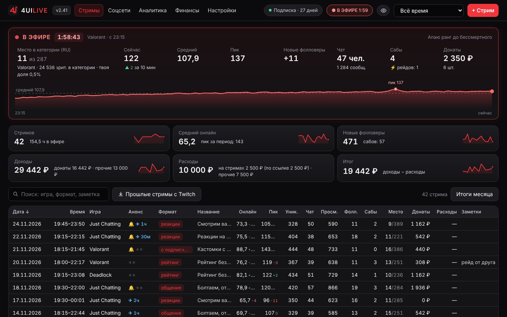
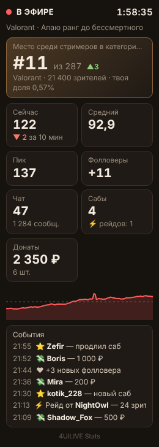
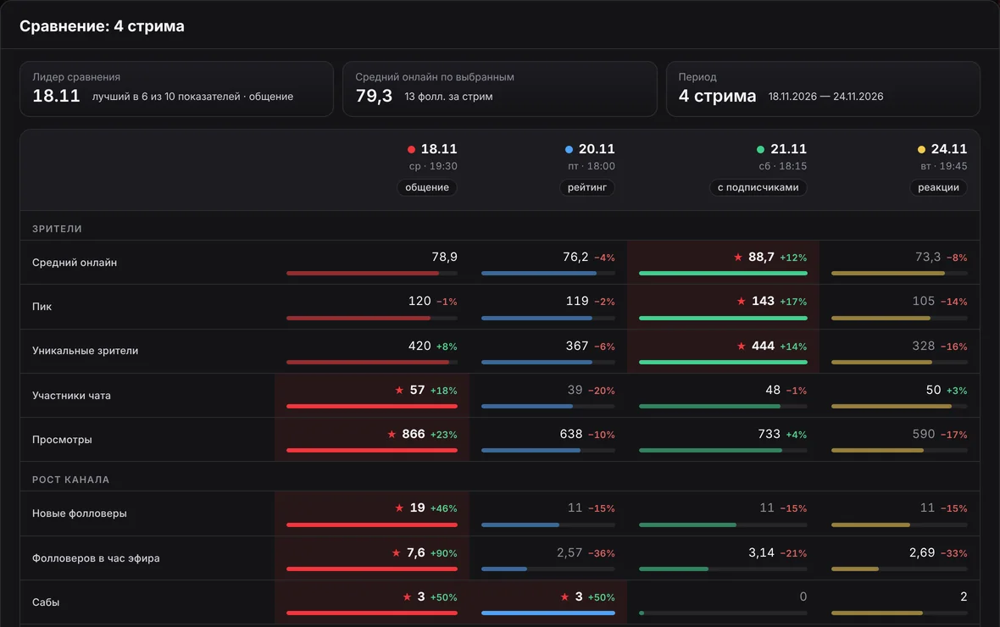
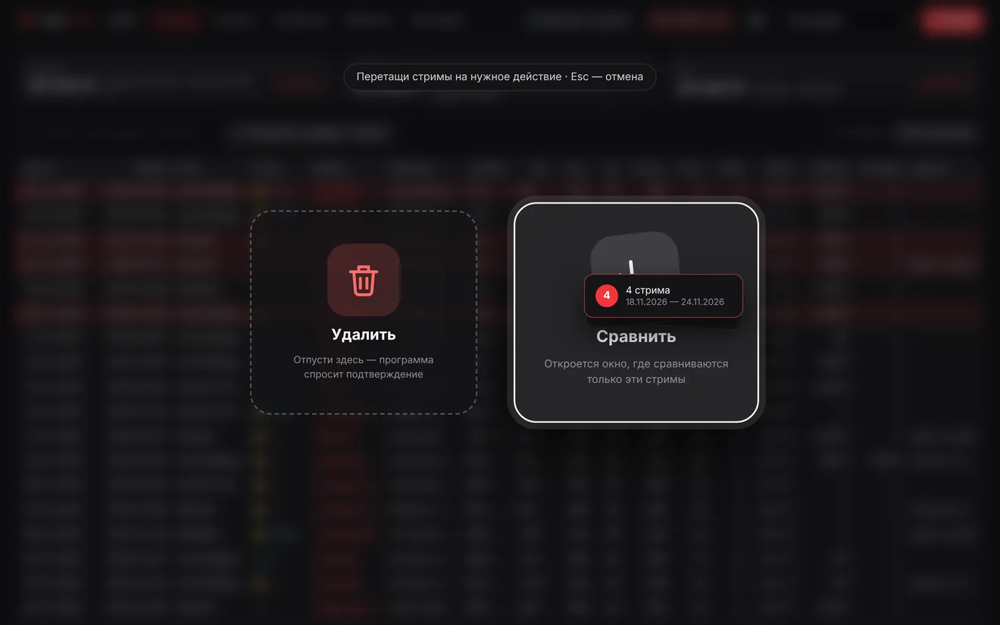
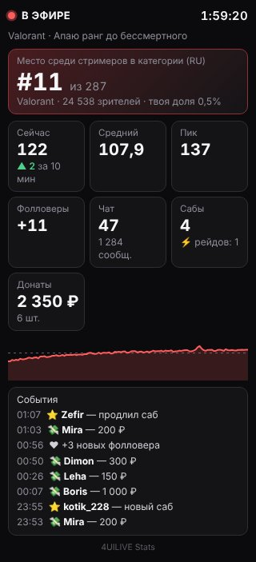

Узнай, что на самом деле приводит зрителей на твои стримы
4UILIVE Stats связывает твои ролики в Shorts и TikTok, видео на YouTube и посты в Telegram со стримами — и показывает, после чего приходит больше зрителей и фолловеров. Аналитика подскажет, какой формат стрима, день недели и время запуска дают лучший онлайн. А во время эфира — живая плашка прямо в OBS: место среди стримеров категории, онлайн, фолловеры и донаты.


Что умеет программа
Подключаешь Twitch один раз — дальше всё записывается само, пока программа открыта. Даже свёрнутая. А потом программа сама находит связи: что именно двигает твои стримы вверх.
Как соцсети влияют на стримы
Ролик в Shorts или TikTok, видео на YouTube, анонс в Telegram — программа покажет, сколько зрителей и фолловеров пришло после каждого и что работает лучше всего.
Стримы записываются сами
Каждую минуту: онлайн, новые фолловеры, участники чата, сабы, рейды. Эфир закончился — он уже в таблице.
Место в категории
Каким по счёту ты идёшь среди стримеров своей игры и языка — прямо во время эфира и в среднем за стрим.
Донаты и деньги
DonationAlerts, DonatePay и DonateX: вся история, топ донатеров, суммы чистыми после комиссии, цель на месяц.
Аналитика: когда и как стримить
Какой формат, игра, день недели и время запуска дают больше зрителей и фолловеров — с тепловой картой лучшего времени и готовыми выводами.
Итоги месяца картинкой
Онлайн, фолловеры, лучший стрим и рост к прошлому месяцу — готовый пост для Telegram, ВК или сторис.
Сравни любые стримыНОВОЕ
Выдели несколько стримов и перетащи на «Сравнить» — откроется таблица только с ними: кто лучше по онлайну, фолловерам, донатам и месту в категории.
Прошлые стримы — сразу
Сразу после входа через Twitch программа подтянет стримы за последние дни из записей трансляций: дату, время, название, фолловеров и донаты.
Разберёшься за минуту
При первом запуске — короткое знакомство и подсказки по каждой вкладке. Понятные настройки по разделам, срок подписки всегда виден в шапке.
Какой стрим зашёл лучше — видно сразу
Выдели стримы в таблице и просто перетащи их. Экран размоется, появятся две кнопки: «Сравнить» и «Удалить».
- Ctrl + клик — выделить несколько стримов, Shift + клик — сразу диапазон
- Зажми и потяни — стримы сожмутся в стопку; брось её на нужную кнопку. Esc — отмена
- Таблица сравнения: онлайн, пик, зрители, чат, фолловеры, сабы, место в категории, донаты — у каждого стрима свой цвет
- Лучшее значение отмечено ★, рядом — на сколько процентов выше или ниже среднего, внизу — лидер 🏆


Живая плашка прямо в OBS
Добавь одну ссылку в «Док-панели» OBS — и статистика эфира будет рядом с микшером. Саму программу можно не разворачивать.
- Место среди стримеров категории со стрелкой: поднялся ты или опустился, и твоя доля зрителей
- Онлайн сейчас, за 10 минут, средний и пик — с графиком
- Фолловеры, чат, сабы, донаты и лента событий: кто задонатил, кто зарейдил
- Глазик прячет все суммы — в программе и в OBS, — чтобы не светить доход на стриме

Цены
Все возможности в любом тарифе. Подписка покупается в Telegram — ответим и пришлём ключ.
Сначала попробуй: 7 дней бесплатно с полным набором функций. Ключ подписки привязывается к одному компьютеру.
Установка за минуту
Нужен компьютер с Windows 10 или 11 (64-бит).
Скачай
Кнопка «Скачать для Windows» вверху страницы — файл 4UILIVE-Stats-Setup.
Запусти установщик
Если Windows покажет синее окно — нажми «Подробнее» → «Выполнить в любом случае» (см. ниже).
Войди через Twitch
Программа покажет код — подтверди его на twitch.tv/activate. Без паролей и ключей. Стримы за последние дни подтянутся сами.
Стримь
Держи программу открытой (можно свёрнутой) — эфир запишется сам. Обновления приходят сами.
Подробнее
Так Windows реагирует на любую программу без платной цифровой подписи от крупной компании — это не значит, что в ней что-то не так. Нажми «Подробнее», затем «Выполнить в любом случае». Программа ставится только для твоей учётной записи и не трогает системные файлы.
Вопросы
Где хранятся мои данные?
Только у тебя на компьютере — в папке «Документы\4UILIVE Stats». Раз в день программа сама делает резервную копию. Никакие данные никуда не отправляются.
Нужно ли давать пароль от Twitch?
Нет. Вход идёт через официальную страницу Twitch: ты подтверждаешь код, и программа получает доступ только на чтение статистики. Отключить можно в любой момент.
Как подключить донаты?
DonatePay и DonateX — вставить токен из личного кабинета. DonationAlerts — создать своё бесплатное приложение на их сайте (2 минуты, пошаговая инструкция есть в программе).
Что будет, если программа закрыта во время стрима?
Пока она закрыта, онлайн не записывается. Открой её — запись продолжится с этого момента, а после эфира стрим всё равно появится в таблице.
Можно показывать программу на стриме?
Да: кнопка-глазик в шапке (или клавиша H) прячет все суммы — в программе и в панели OBS.
Как обновлять программу?
Никак — она сама скачивает новые версии и предлагает перезапуститься. Твои данные при обновлении не меняются.
Подтянутся ли мои прошлые стримы?
Да, за последние дни: сразу после входа через Twitch программа возьмёт их из записей трансляций (Twitch хранит записи 7 дней, у партнёров — 60, и только если в настройках канала включено «Сохранять прошлые трансляции»). Более старые стримы можно внести вручную.
Как сравнить два конкретных стрима?
Выдели их в таблице (Ctrl + клик), зажми мышку на выделенных и перетащи на «Сравнить». Откроется окно, где сравниваются только они — с лучшими результатами и лидером.
Попробуй 7 дней бесплатно
Скачай, войди через Twitch — и следующий эфир запишется сам.